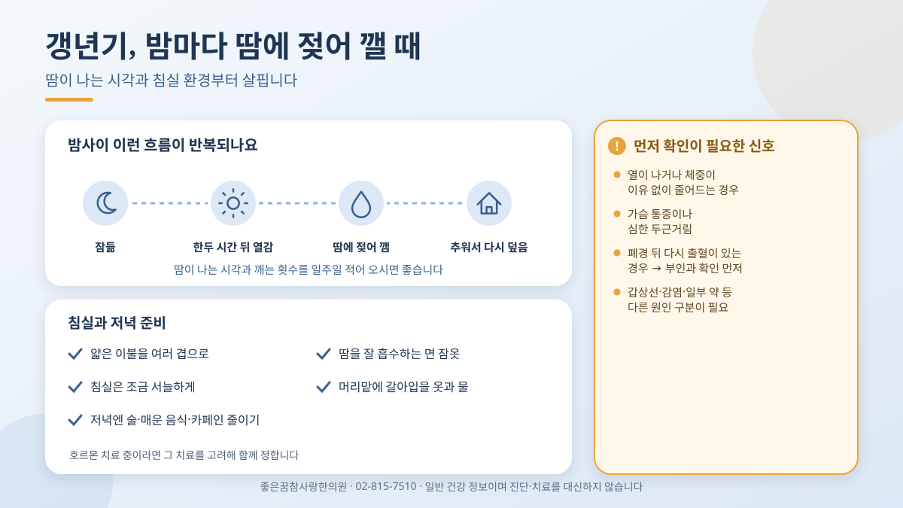

갱년기에 밤마다 땀에 젖어 깬다면 땀이 나는 시각과 횟수, 침실 환경, 낮의 열감과 기분 변화를 먼저 묻고 잠과 열감을 함께 살피며, 열이나 체중 감소가 있으면 다른 원인 확인을 먼저 안내합니다.
여쭙는 것
- 밤에 몇 번 정도 땀 때문에 깨시나요?
- 땀으로 깬 뒤 다시 잠드는 데 얼마나 걸리나요?
- 낮에도 얼굴이 화끈거리는 열감이 있나요?
생활에서 해 볼 것
- 얇은 이불을 여러 겹 써서 쉽게 조절하기
- 잠옷은 땀을 잘 흡수하는 면 소재로 고르기
- 저녁에는 술과 매운 음식, 카페인 줄이기
한의원에서 함께 살필 것
- 갱년기 열감과 땀으로 잠이 자주 깨는 경우 잠의 모양과 몸의 열감을 함께 살핍니다.
- 감정 기복과 두근거림이 함께 있는 경우 긴장 정도와 생활 리듬을 함께 살핍니다.
- 피로가 쌓여 낮 동안 기운이 없는 경우 식사와 잠을 함께 살핍니다.
먼저 확인이 필요한 신호
- 열이 나거나 체중이 이유 없이 줄어드는 경우
- 가슴 통증이나 심한 두근거림이 있는 경우
- 폐경 뒤 다시 출혈이 있는 경우

갱년기에 밤마다 땀에 젖어 깬다면, 땀이 나는 시각과 깨는 횟수, 침실 환경, 낮의 열감과 기분 변화를 먼저 살피고 잠과 열감을 함께 다룹니다. 열이 나거나 체중이 이유 없이 줄어든다면 다른 원인 확인이 먼저입니다. 잠들고 한두 시간 뒤 갑자기 몸이 뜨거워지며 땀에 젖어 깨고, 이불을 걷었다가 다시 추워 덮기를 반복한다는 분이 많습니다.
폐경은 생리가 1년 동안 없을 때를 말하고, 그 앞뒤 몇 년 동안 열감과 땀, 잠의 변화가 이어질 수 있습니다. 증상이 나타나는 기간과 세기는 사람마다 크게 달라 몇 달 만에 지나가는 분도 있고 몇 년 이어지는 분도 있습니다. 그래서 언제 끝나느냐보다 지금 잠이 얼마나 끊기고 낮 생활에 얼마나 지장이 있는지를 기준으로 함께 살핍니다.
왜 이런 불편이 생길 수 있나요
- 폐경을 앞뒤로 호르몬이 줄어들면 체온을 조절하는 기능이 예민해져, 갑자기 열이 오르며 땀이 나는 경우가 있습니다.
- 술, 매운 음식, 카페인, 따뜻한 침실은 밤의 열감을 더할 수 있습니다.
- 땀 때문에 잠이 자주 끊기면 다음 날 피로와 예민함이 쌓입니다.
- 땀으로 깬 뒤 다시 잠들지 못하는 날이 이어지면, 밤이 다가올수록 오늘도 깰까 하는 걱정이 잠을 더 얕게 만들기도 합니다.
- 40세 이전에 생리가 멈추고 열감이 시작되었다면 난소 기능이 일찍 떨어진 것은 아닌지 부인과 확인이 필요합니다.
- 갑상선 기능 변화나 감염, 일부 약처럼 다른 원인도 있을 수 있어 구분이 필요합니다.

먼저 이렇게 여쭙니다
- 밤에 몇 번 정도 땀 때문에 깨시나요?
- 땀으로 깬 뒤 다시 잠드는 데 얼마나 걸리나요?
- 낮에도 얼굴이 화끈거리는 열감이 있나요?
- 생리가 불규칙해지거나 멈춘 지 얼마나 되었나요?
- 기분 변화나 두근거림이 함께 있나요?
- 열이나 체중 변화가 있거나, 목이나 겨드랑이에 멍울이 만져진 적이 있나요?
- 호르몬 치료나 다른 약을 드시나요?
스스로 점검해 보세요
- 잠들고 한두 시간 뒤나 새벽에 갑자기 몸이 뜨거워지며 깬다
- 땀이 식으면 다시 추워져 이불을 덮었다 걷었다 한다
- 낮에도 얼굴과 목이 화끈 달아오르는 때가 있다
- 생리가 불규칙해졌거나 멈춘 지 1년 안팎이다
- 저녁에 술이나 매운 음식을 먹은 날 더 심하다
- 땀 때문에 깬 다음 날 낮에 예민하고 집중이 어렵다
- 열이 나거나, 먹는 양은 그대로인데 체중이 줄고 있다
앞의 여섯 가지가 주로 해당한다면 갱년기 열감과 잠의 흐름을 함께 살펴볼 수 있습니다. 마지막 항목이 해당한다면 갱년기 변화로만 보지 말고 내과 진료를 먼저 받아 보시길 권합니다.

일상에서 먼저 해 볼 수 있는 것
- 얇은 이불을 여러 겹 써서 쉽게 조절하기
- 잠옷은 땀을 잘 흡수하는 면 소재로 고르기
- 저녁에는 술과 매운 음식, 카페인 줄이기
- 침실 온도를 조금 서늘하게 맞추기
- 머리맡에 갈아입을 옷과 물을 두기
열감이 올라올 때는 하던 일을 잠시 멈추고 천천히 길게 숨을 내쉬어 보세요. 잠자리 옆에 부채나 작은 선풍기를 두고, 땀에 젖은 잠옷은 참지 말고 바로 갈아입으면 다시 잠들기가 한결 수월할 수 있습니다. 깬 뒤 시계를 자주 보면 마음이 조급해지기 쉬우니 시계는 보이지 않는 곳에 두고, 20분쯤 지나도 잠이 오지 않으면 잠시 일어나 어두운 곳에서 쉬었다가 다시 눕는 방법도 있습니다.
예를 들면 이런 경우입니다
- 예를 들어 아침 일찍 출근해야 하는 직장인이라면, 땀으로 깬 시각과 다시 잠든 시각을 일주일 정도 적어 오시도록 해 낮 졸림과 업무 부담을 함께 살피고 저녁 시간을 보내는 법부터 조정합니다.
- 예를 들어 손주를 돌보느라 낮에도 쉴 틈이 없는 분이라면, 낮의 피로와 끼니 시간, 짧게라도 쉴 수 있는 때가 있는지를 함께 여쭙습니다.
- 예를 들어 함께 자는 가족과 침실 온도가 맞지 않아 밤마다 불편한 분이라면, 각자 다른 두께의 이불을 쓰거나 잠옷 소재를 바꾸는 것처럼 함께 지낼 수 있는 방법부터 이야기합니다.

얼마나 지켜보고, 언제 상담할까요
- 땀으로 깨는 날이 가끔이라면 침실 온도, 이불, 저녁 술을 조절하며 2~3주 지켜볼 수 있습니다.
- 일주일에 서너 번 넘게 땀으로 깨는 날이 몇 주 이어지거나 낮 생활이 지칠 정도라면 상담을 받아 보시길 권합니다.
- 호르몬 치료를 고민하고 있다면 산부인과에서 장단점과 본인에게 맞는지를 먼저 상의해 보세요.
- 이럴 땐 바로 확인하세요. 열이 나거나 이유 없이 체중이 줄고 목·겨드랑이에 멍울이 만져지거나, 가슴 통증이나 숨이 차는 두근거림이 있다면 기다리지 말고 내과나 응급실을 먼저 찾으세요.
한의원에서 함께 살필 수 있는 경우
- 갱년기 열감과 땀으로 잠이 자주 깨는 경우 잠의 모양과 몸의 열감을 함께 살핍니다.
- 감정 기복과 두근거림이 함께 있는 경우 긴장 정도와 생활 리듬을 함께 살핍니다.
- 피로가 쌓여 낮 동안 기운이 없는 경우 식사와 잠을 함께 살핍니다.
좋은꿈참사랑한의원에서는 먼저 땀과 열감이 오는 시간, 잠과 기분의 변화를 충분히 듣고, 진맥과 설진 등 필요한 방법으로 몸 상태를 살핍니다. 그다음 침, 한약 상담, 생활 리듬 조정 가운데 상태에 맞는 방법을 정하고, 호르몬 치료 중이라면 그 치료를 고려해 함께 정합니다. 귀가 전에는 일주일 동안 적어 볼 수면 기록을 알려 드립니다.
처음 오시면 문진으로 열감과 땀이 오는 시각, 잠과 기분의 변화, 생리 변화를 듣고 맥부터 짚어 본 뒤 혀와 얼굴·손발의 온기도 함께 살핍니다. 부인과나 내과 검사 결과가 있다면 함께 보고, 다른 원인 확인이 먼저라고 판단되면 그 진료를 먼저 안내합니다. 한약은 몸 상태를 살핀 뒤 필요하다고 판단될 때 상담하며, 열감이나 땀이 얼마 만에 줄어든다고 미리 단정하지 않습니다. 호르몬제, 혈압약, 정신건강의학과 약 등 복용 중인 약은 상담 전에 먼저 알려 주세요. 비용이나 보험 적용은 방문 전 전화로 확인해 주세요.

이렇게 기록해 오시면 상담이 쉬워집니다
- 밤에 땀으로 깬 시각과 횟수(일주일)
- 낮의 열감이 오는 시간과 계기
- 저녁에 마신 술·커피와 먹은 음식
- 마지막 생리일과 최근 주기 변화
- 낮의 기분 변화와 두근거림이 있었던 날
- 복용 중인 호르몬제와 다른 약
이런 증상은 먼저 확인이 필요합니다
- 열이 나거나 체중이 이유 없이 줄어드는 경우
- 가슴 통증이나 심한 두근거림이 있는 경우
- 폐경 뒤 다시 출혈이 있는 경우
- 40세 이전에 생리가 멈추고 열감이 시작된 경우
- 기분이 2주 넘게 가라앉아 일상이 어렵거나 극단적인 생각이 드는 경우
폐경 뒤 출혈은 부인과 확인이 먼저입니다. 기분이 깊이 가라앉거나 스스로를 해치고 싶은 생각이 들면 혼자 견디지 말고 109에 바로 연락하세요. 임신 가능성이 있다면 진료 전에 꼭 알려 주세요. 복용 중인 호르몬제나 다른 약은 처방한 의사와 상의 없이 줄이거나 끊지 않습니다.
함께 읽으면 좋은 글
- 갱년기에 몸이 달라질 때 한의원에서는 무엇을 먼저 묻나요?
- 갱년기에 열이 확 오를 때 옷은 어떻게 입고 실내 온도는 어떻게 맞추면 좋을까요?
- 밤에 식은땀이 나서 잠이 깰 때는 무엇을 살펴보나요?
한눈에 보는 표
| 구분 | 핵심 |
|---|---|
| 여쭙는 것 | 밤에 몇 번 정도 땀 때문에 깨시나요? 땀으로 깬 뒤 다시 잠드는 데 얼마나 걸리나요? |
| 생활에서 해 볼 것 | 얇은 이불을 여러 겹 써서 쉽게 조절하기 잠옷은 땀을 잘 흡수하는 면 소재로 고르기 |
| 한의원에서 함께 살필 것 | 갱년기 열감과 땀으로 잠이 자주 깨는 경우 잠의 모양과 몸의 열감을 함께 살핍니다. 감정 기복과 두근거림이 함께 있는 경우 긴장 정도와 생활 리듬을 함께 살핍니다. |
| 먼저 확인이 필요한 신호 | 열이 나거나 체중이 이유 없이 줄어드는 경우 가슴 통증이나 심한 두근거림이 있는 경우 |
자주 묻는 질문
호르몬 치료를 받고 있어도 상담할 수 있나요?
네. 복용 중인 약을 알려 주시면 그에 맞춰 함께 살핍니다.
땀이 많이 나는 것도 갱년기 때문인가요?
갱년기에서 흔하지만 다른 원인도 있을 수 있어 필요하면 검사를 함께 권합니다.
잠을 위해 술을 조금 마시면 어떤가요?
술은 잠든 뒤 열감과 땀을 더할 수 있어 줄이시길 권합니다.
수면제를 먹고 있는데 함께 상담해도 되나요?
네. 드시는 약은 그대로 유지하시고 상담 때 알려 주세요. 약 조절은 처방한 의사와 상의합니다.
진료 시간은 어떻게 되나요?
좋은꿈참사랑한의원은 평일 09:30~20:00(점심 13:00~14:00), 토·일·공휴일 09:30~15:00에 진료합니다.
이 글은 일반적인 건강 정보이며 개인의 진단이나 치료를 대신하지 않습니다. 증상이 있거나 복용 중인 약이 있다면 진료를 통해 확인하세요. 치료 효과는 개인마다 다를 수 있습니다.
작성 기준: 일반적으로 알려져 있는 건강 정보를 참고해 정리했습니다(대표원장 감수). 증상 기록은 1~2주 동안 하루 1회, 비슷한 시간에 적어 오시면 지난 상태와 비교하기 쉽습니다.
좋은꿈참사랑한의원은 재진 때 지난번 이야기부터 이어서 여쭙니다. 진료시간과 예약은 오시는 길에서 확인하세요.
어디서 상담받을 수 있나요?
좋은꿈참사랑한의원은 서울 동작구 만양로2길 2 신성빌딩 3층·5층(서울 동작구 상도동, 7호선 상도역 3번 출구 근처)에 있습니다. 한의사 3명(이종호 대표원장, 조영기 수석진료원장, 정원영 진료원장)이 진료합니다. 진료시간은 평일 09:30~20:00(점심 13:00~14:00), 토·일·공휴일 09:30~15:00이며, 방문 전 전화로 확인을 권합니다. 예약은 네이버 예약, 카카오톡 상담, 전화 02-815-7510로 받습니다.